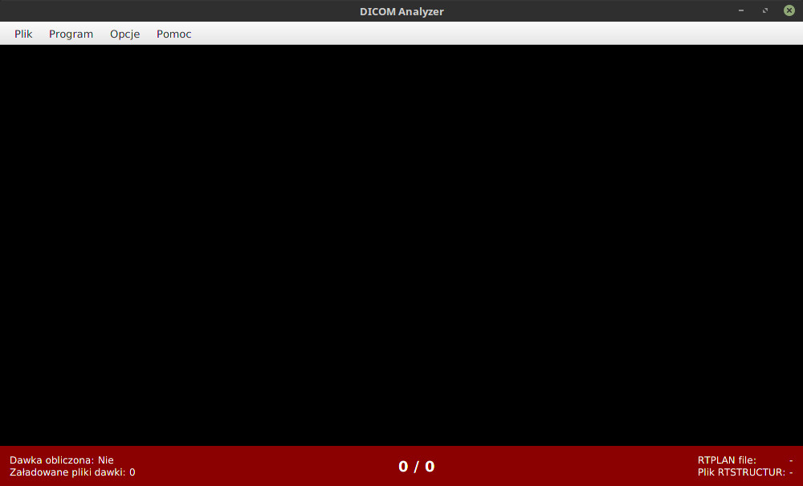
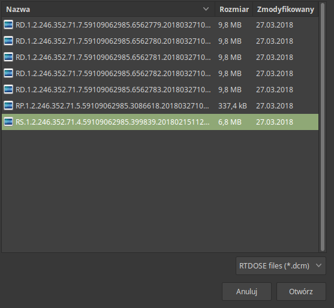
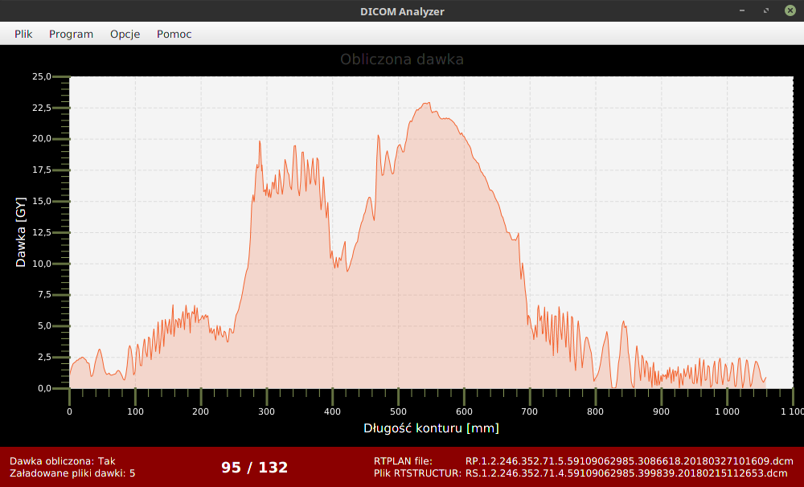

Program DICOMAnalyzer to program mający na celu obliczenie rozkładu dawki na zamkniętych powierzchniach w kształcie rury. Wykorzystywany jest do szybkiego odczytu informacji z plików DICOM. Importowane pliki mogą pochodzić z bardziej rozbudowanych programów współpracujących z standardem DICOM. Program na podstawie tablicy dawek prezentuje a także daje możliwość wykonania określonych obliczeń na danych. Program dostarcza informacji o rozkładzie dawki na powierzchni oznaczonego konturu przez specjalistę, przykładowo ściany jelita grubego.
Program dostępny jest w publicznym repozytorium: https://github.com/barklis/DICOMAnalyzer.git
Program można uruchomić poprzez uruchomienie pliku wykonywalnego o rozszerzeniu .jar, aby było to możliwe system Windows bądź Linux powinny mieć zainstalowane środowisko java (jre 9 bądź nowsze, koniecznie javaFX). Program po uruchomieniu zwraca puste okno z dostępnymi opcjami które wygląda następująco:
Program wymaga wczytania co najmniej trzech plików zawierających kolejno informacje o dawce, konturach, planie leczenia. Aby wczytać niezbędne pliki należy skorzystać z paska menu który znajduje się w górnej części programu. Wybieramy: Plik>>Załaduj Plik RTSTRUCTUR po czym odszukujemy plik z informacją o konturach. Następnie odszukujemy pliki z dawką wybierając analogicznie: Plik>>Załaduj pliki RTDOSE oraz plik z planem: Plik>>Załaduj plik RTPLAN . W dolnej części programu widoczna jest informacja o stanie wczytywanych plików.
W celu wyświetlenia danych należ skorzystać z zakładki Program w pasku menu. Dostępne są tam następujące opcje:
Gdy obliczy się dawkę wybierając: Program>>Oblicz dawkę możliwe jest wyświetlenie histogramu postępując: Program>>Histogram obliczonej dawki
